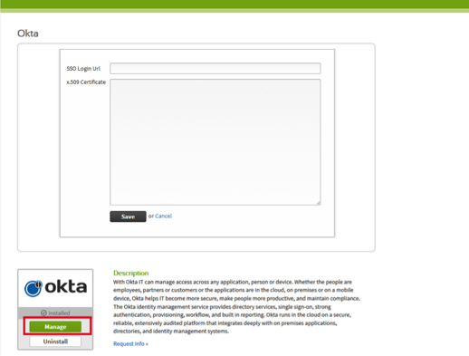

Navigate to BambooHR at https://<your_subdomain>.bamboohr.com where <your_subdomain> is your organization's subdomain, and sign in with your existing credentials. This URL is the default relay state for your organization.
The following screen displays.

Copy the following value to the SSO Login Url field, as shown above.
Sign into the Okta Admin dashboard to generate this value.Copy the following certificate and paste it into the x.509 Certificate field, as shown above. Be sure to include the Begin Certificate and End Certificate lines.
Sign in to the Okta Admin app to generate this value.